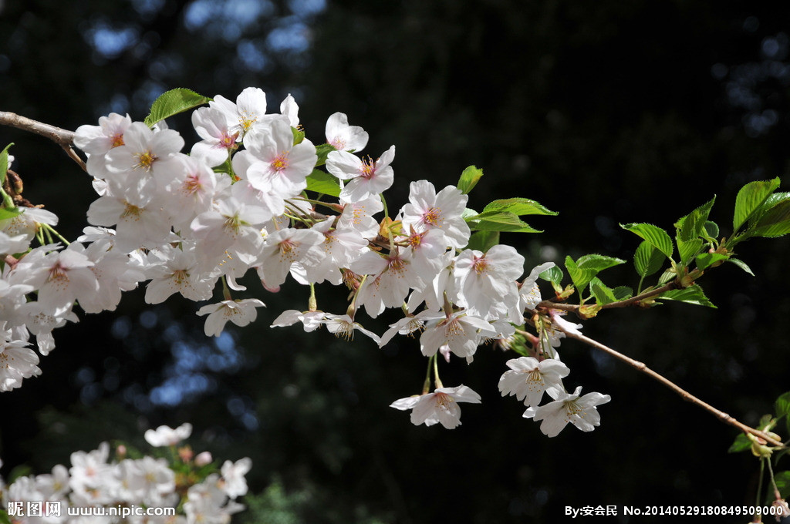

在威斯敏斯特教堂旁边，矗立着一块墓碑，
上面刻着一段非常著名的话“当我年轻的时候，我梦想着改变这个世界”
当我成熟以后，我发现我不能够改变这个世界，我将目光缩短了些，决定
只改变为的国家； 当我进入暮年以后，我发现我不能够改变我们的国家，我的
最后愿望仅仅是改变一下我的家庭，但是，这也不可能。当我现在躺在床上，
行将就木时，我突然意识到：如果一开始我仅仅去改变我自己，然后，我可能
改变我的家庭；在加入到帮助和鼓励下，我可能为国家做一些事情；然后，谁知道
呢？我甚至可能改变这个世界。”
——题记
1.我们的相遇
漫漫青春青春路，多少岔路口，青春蹉跎，机会错过。而我，庆幸遇上了柳职的老师。
2.我的感恩
敲完最后一行代码，走出办公室，站在曾经觉得特别高大上的过地窗前，看着倒影中的
自己，虽说有点累，但感到特别充实，许久没有过这种踏实和平静的感觉。我喜欢并珍惜
作为女程序员的日子。这一切，都要感谢柳职以及柳职的每一位老师
3.梦想开花

我庆幸在最美的年华、最渴望改变的时候遇到了柳职，庆幸遇上了柳职，因为你们的专业
和专注，才成就了我向往的IT梦，才让我在青春的路上开满了理想的话。在此真心感谢柳职
的每一位老师，纵然时光荏苒，师恩永远铭记在心。